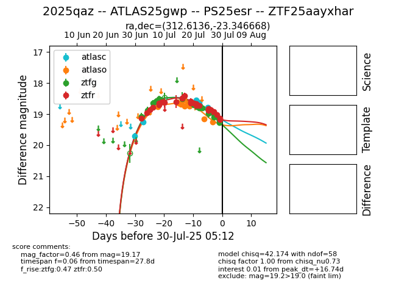

Target 2025qaz at 2025-07-30 05:12, see:
FINK: fink-portal.org/2025qaz
Lasair: lasair-ztf.lsst.ac.uk/objects/2025qaz
ALeRCE: alerce.online/object/2025qaz
TNS: wis-tns.org/object/2025qaz
YSE: ziggy.ucolick.org/yse/transient_detail/2025qaz
alt names
ZTF25aayxhar (ztf,fink)
2025qaz (tns,yse)
ATLAS25gwp (atlas)
PS25esr (panstarrs)
coordinates:
equatorial (ra, dec) = (312.6136,-23.34667)
galactic (l, b) = (22.6267,-35.88942)
photometry
last atlasc=18.79, atlaso=19.25, ztfg=19.16, ztfr=19.17
6 atlasc, 11 atlaso, 18 ztfg, 25 ztfr detections
